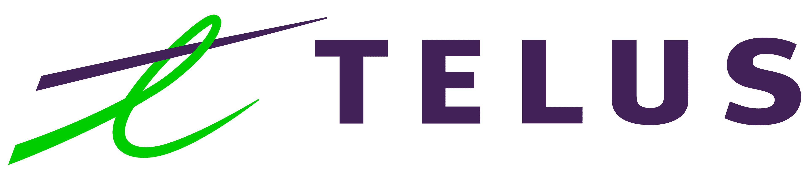

Hello, I'm Maram Elsayed! A fresh graduate, having recently attained a Bachelor's degree in Software Engineering from the University of Calgary.
I have a deep interest towards the everlasting and fascinating field of technology. Continuously improving my skills by engaging with diverse platforms, tools and programming languages has been a source of enthusiasm for me.
Outside of the world of technology, I personally enjoy exploring a variety of different hobbies such as knitting, ice skating, biking, etc.
Bachelor of Science in Software Engineering, With Distinction
Schulich School of Engineering, University of Calgary
Sep 2018 - May 2023
Dean’s List
2021-2022
2022-2023
Languages
C, C++, C#, Java, JavaScript, Python, Pascal, SQL, HTML, CSS, MIPS.
Tools & Frameworks
Git, Django, Flask, REST APIs, JUnit, Java GUI, MySQL Workbench,
Selenium, Hadoop MapReduce, Docker, Apache Spark, Jupyter, GNS3, JetBrains, Blazor.
Python, GNS3, CentOS (Linux), Flask, Git.
In collaboration with a team of six, I contributed to the development of an Adaptive Bandwidth Throttling (ABT) framework. This framework was implemented into a Network Simulation Model using GNS3 and Virtual Ubuntu Desktops to visualise a proof of concept. Additionally, we designed a comprehensive solution for Core Network and Radio Access Network (RAN) Utilization Monitoring. This solution enabled us to efficiently throttle bandwidth to a specified capacity, tailored to the service grade of our clients. Overall, this project involved creating a sophisticated ABT system and network monitoring tools to optimize network performance and enhance service quality.
Python, Jupyter, Git.
I constructed three Naïve Bayes models, each utilizing distinct textual features, to forecast users' geolocation using their tweets. The models achieved accuracies of 79%, 70%, and 67%, respectively. In addition, I conducted exploratory data analysis (EDA) and pre-processed the data to gain a comprehensive understanding of the dataset's underlying trends and patterns.
C#, HTML, CSS, ASP.NET, Blazor.
I was a key contributor in a team of five, focusing on designing and refining the User Interface (UI) for a Library System. We applied Human-Computer Interaction (HCI) techniques to enhance the overall user experience, ensuring that customers could seamlessly navigate and utilize the system. Additionally, I played a significant role in building the front-end of a dynamic web application, highlighting my skills in creating an engaging and user-friendly online platform. This experience helped me improve my abilities in UI design, HCI, and front-end development, contributing to our project's success.